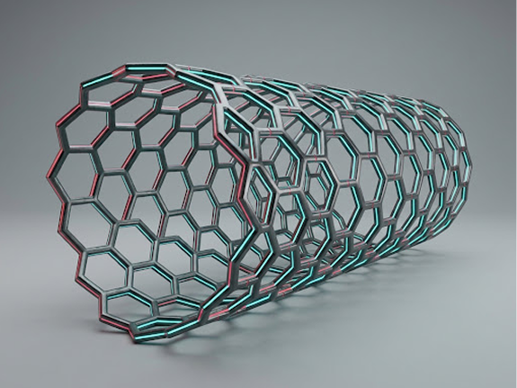

제품소개
제품소개
HOME > 제품소개 > 나노탄소
나노탄소Carbon Nanomaterials & Solutions
금호석유화학의 나노탄소는 뛰어난 전기적⋅기계적 특성을 바탕으로
전지, 반도체, 복합소재 등 첨단 산업 전반에 걸쳐 고기능성 솔루션을 제공합니다.
차세대 첨단 신소재 탄소나노튜브 (Carbon Nanotube)
1991년 발견 이래 금속 대비 뛰어난 전기⋅열 전도성과 기계적 강도를 자랑하는 꿈의 신소재 금호석유화학 K–Nanos는 고분자 기지 내 탁월한 분산성과 고밀도화 비산 감소 기술을 통해 완벽한 품질 안정성을 제공합니다.

CORE ADVANTAGES | 01. K–NANOS CHARACTERISTICSK–Nanos 핵심 특성 및 고기능성
-
ELECTRICAL & THERMAL bolt
우수한 전도성
- 구리⋅금속 대비 탁월한 전도
- 탄소원자 육각벌집 구조를 통한 고속 전자 전달 및 극대화된 방열 효율 구현
핵심 메트릭 열전도율 / 전기전도도 극대화 -
MECHANICAL STRENGTH fitness_center
초고강도
- 강철 대비 월등한 인장 강도
- 미세 나노 직경 구조로 고분자 복합소재의 강성과 내구성을 혁신적으로 향상
기계적 특성 경량 고강도 복합체 구현 -
DISPERSION TECH bubble_chart
독보적 분산성
- 고분자 기지 균일 분산 기술
- K–Nanos 고유 분산 제어 기술로 응집을 방지하고 균일한 품질 및 가공성 보장
작업성 및 안전성 생산환경 개선 (비산 감소)
APPLIED INDUSTRIAL DOMAINS주요 산업 적용 분야 (Applications)
K–NANOS INDUSTRIAL SOLUTIONS-
battery_charging_full
SECTOR 01
이차전지용 전극Secondary Battery Electrodes
배터리 양극재/음극재 도전재 적용, 에너지 밀도 및 수명 혁신
적용 분야 양⋅음극 도전재 -
precision_manufacturing
SECTOR 02
고강도 경량 복합소재High Strength Composites
자동차, 항공, 스포츠용 고강성⋅내충격 엔지니어링 플라스틱
적용 분야 구조 복합체 -
shield
SECTOR 03
전기전도성 복합소재Conductive ESD / EMI
정전기 방지(ESD) 및 전자파 차폐(EMI) 부품 및 패키징
적용 분야 ESD / EMI 차폐 -
device_thermostat
SECTOR 04
방열 및 투명전극Thermal Dissipation & Optics
고발열 반도체 방열 컴파운드 및 차세대 투명 디스플레이 전극
적용 분야 TIM / 투명 디스플레이
MWCNT 표준 Grade별 규격 및 물리적 특성 사양표(Specifications)
K–Nanos MWCNT Series 기준: 검사성적서 표준 규격| CATEGORY (구분) | GRADE (제품명) | 직경 (OUTER DIAMETER,NM) | 길이 (LENGTH,㎛) | 순도 (PURITY,WT.%) | 겉보기밀도 (BULK DENSITY,G/ML) | 형상(FORM) | 주요 용도 (TARGET APPLICATIONS) |
|---|---|---|---|---|---|---|---|
| MWCNT | K–Nanos 100T | 8 ˜ 18 nm | 40 ˜ 50 ㎛ | ˜95 wt.% | ˜0.09 g/ml | 분말 | 범용 복합소재 |
| MWCNT | K–Nanos 210T | 7 ˜ 20 nm | 40 ˜ 50 ㎛ | ˜95 wt.% | ˜0.09 g/ml | 분말 | 고전도성 특화 |
| MWCNT | K-Nanos 400T | 7 ˜ 31 nm | 90 ˜ 100 ㎛ | ˜98 wt.% | ˜0.09 g/ml | 분말 | 고순도 반도체/디스플레이 |
| MWCNT | K–Nanos 300T | 10 ˜ 15 nm | 60 ˜ 80 ㎛ | ˜94 wt.% | ˜0.10 g/ml | 분말 | 이차전지 전극 도전재 |
| MWCNT | K–Nanos 300T_F100 | 7 ˜ 10 nm | 94 ˜ 114 ㎛ | ˜96 wt.% | ˜0.10 g/ml | 분말 | 차세대 고용량 이차전지 |